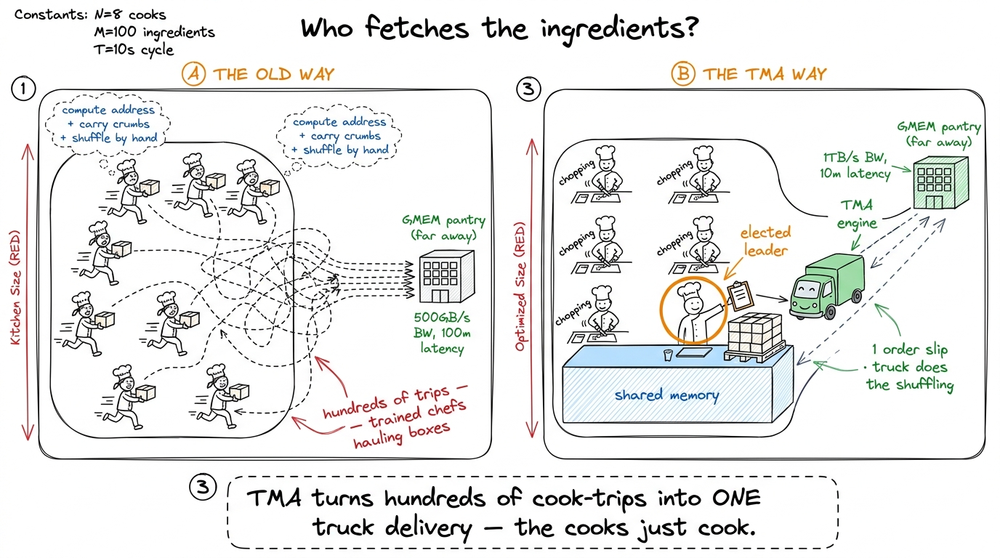
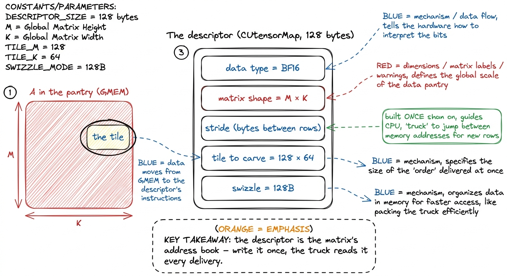
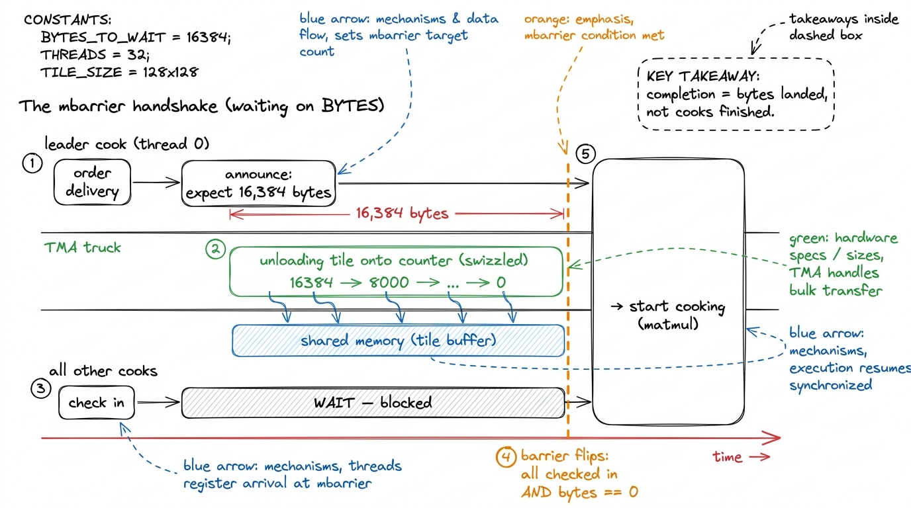
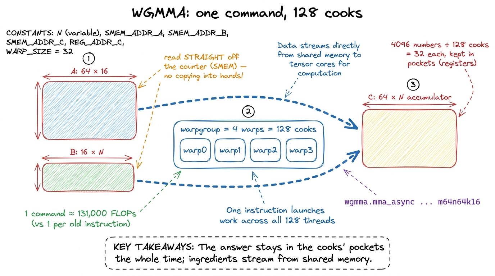
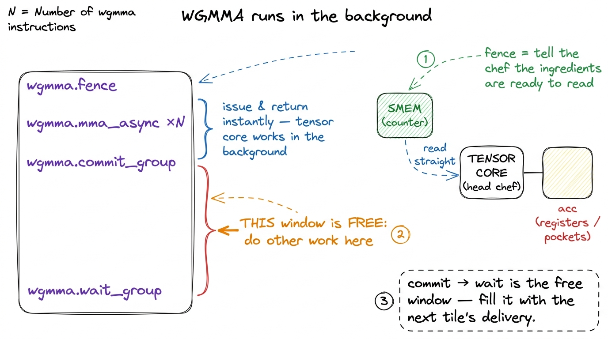
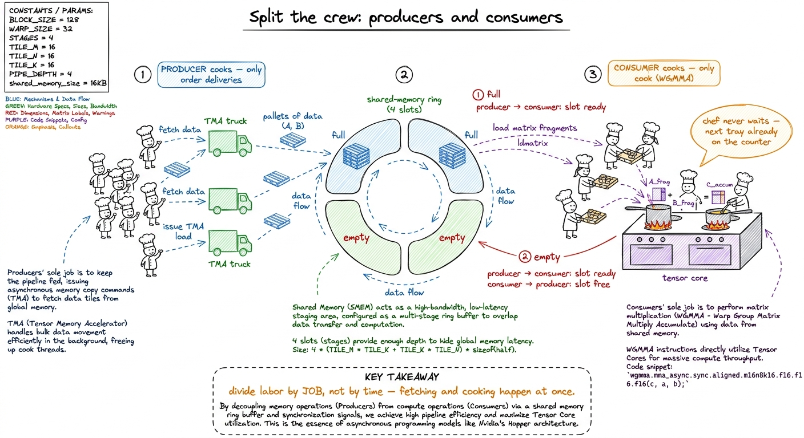

Teaching Hopper: the async delivery truck (TMA & WGMMA)
By the end of this chapter you'll be able to stand at a whiteboard and teach why the H100 has a special copy machine and a special matmul instruction — and why the fastest attention kernel in the world, FlashAttention-3, cannot exist without both. You do not need to have written a single line of CUDA to teach this well. You need two good metaphors, one honest number, and the patience to reveal the pieces in the right order. Let's build it.
Where we are in the story
By now your students have climbed a ladder of matmul kernels. They can chant the lesson from the CPU-vs-GPU chapter: a GPU is almost never limited by how fast it can do math — it's limited by how fast it can be fed data. Every optimization so far has been a better way to feed the cooks.
This chapter is about the H100 (codename Hopper), the chip that took feeding the cooks so seriously that NVIDIA built two brand-new pieces of hardware just for it. One is a dedicated delivery truck that moves data so the cooks don't have to. The other makes a hundred cooks do one enormous chunk of math on a single command. Their names are TMA and WGMMA. Scary letters, simple ideas.
The old way: every cook is also a delivery boy
Remember how a tiled matmul loads data. A block of threads — a crew of cooks — needs a tile of matrix A and a tile of B sitting in fast shared memory (the counter beside the stove) before it can multiply anything. On the older chips, the cooks themselves had to go get it. Each of the 128 or 256 cooks computes an address, walks to the far pantry, grabs a few crumbs, walks back, and only then cooks.
There's a second, uglier problem. The head chef (the tensor core, the real matmul unit) is fussy about how the ingredients sit on the counter. It wants them in a special shuffled arrangement — a swizzle — so it can grab from every part of the counter at once without two hands colliding. On the old way, the cooks did that shuffling by hand, element by element, every load. It's finicky code that stays quietly wrong for a week before anyone notices.

figure rendering · Left: every cook runs to the pantry. Right: one cook hands a slip to aMeet TMA: the delivery truck
TMA stands for Tensor Memory Accelerator. Forget the name; here's the picture. It is a dedicated piece of silicon whose only job is to move rectangular tiles of data from the far pantry (global memory, called GMEM or HBM) into the counter (shared memory) — and to do the fussy swizzle-shuffle for free on the way.
The magic is in how you order the delivery. One cook — an elected leader, conventionally the thread numbered zero — fills out a tiny order slip and hands it to the truck: "Here's a matrix in the pantry with this shape. Carve out the tile at these coordinates, drop it here on my counter, shuffled the way the head chef likes." Then that cook walks away. The truck delivers in the background while all the cooks — including the leader — go do useful work.
That order slip has a real name: a descriptor, or CUtensorMap. It's a 128-byte blob describing the matrix's shape, its stride (how far apart the rows sit in memory), the tile size to carve, and the swizzle mode. And the beautiful part: you build it once, on the host CPU, before the kernel even runs. The knowledge of "how is this matrix laid out" leaves the hot loop entirely and lives in that little slip.

figure rendering · The descriptor is a 128-byte order slip: shape, stride, tile size, swiHow do the cooks know the delivery arrived?
This is the one genuinely subtle part, so slow down — it's where every engineer gets tangled the first time.
On the old way, a cook knew its onions had arrived because it carried them itself. But the TMA truck runs in the background. So the cooks need to be told "the pallet has fully landed — start cooking." That signal is an mbarrier, a little shared counter everyone waits at.
And here's the twist: the mbarrier does not count cooks. It counts bytes. When the leader orders the delivery, it also announces "expect exactly this many bytes" (for a 128×64 tile of 2-byte numbers, that's 128 × 64 × 2 = 16,384 bytes). The truck counts those bytes down as it unloads: 16,384 → … → 0. Only when the counter hits zero does the barrier flip and release the waiting cooks.

figure rendering · The leader announces a byte count, the truck counts it down, and the bMeet WGMMA: one command, a hundred cooks
Now the second new piece. TMA fixed feeding. WGMMA fixes cooking.
WGMMA stands for Warpgroup Matrix Multiply-Accumulate. On the old chips, the smallest team of cooks was a warp — 32 threads moving in lockstep — and each cook did one tiny multiply-add per command. To get near the H100's rated 989 trillion BF16 operations per second, you'd issue commands so fast the manager (the warp scheduler) would collapse before the cooks did. One command per multiply-add is simply too many commands.
WGMMA's answer: make the command enormous. A warpgroup is four warps stuck together — exactly 128 cooks — and WGMMA gives all 128 a single order that multiplies a whole tile at once.
The canonical WGMMA does a 64 × 16 tile of A times a 16 × N tile of B (where N can be 64, up to 256), landing in a 64 × N result. Let's count the work in one command.
m64n64k16 WGMMA computes roughly 2 × 64 × 64 × 16 ≈ 131,000 floating-point operations from ONE instruction. Write that on the board next to "old way: 1 multiply-add per instruction." One command doing the work of a hundred thousand. That is the leverage Hopper was built to give — and the jaw-drop number for this block.Two more things break students' old intuition, and both are worth saying slowly.
First: the answer lives in the cooks' pockets. The 64 × 64 result — 4,096 numbers — is too big for any one cook. So WGMMA spreads it across all 128: each holds a 32-number fragment in its own registers. And it stays there through the whole multiplication — you never re-copy or re-zero it. A flag on the command says "add onto what you already have," so accumulating across many tiles is free.
Second: the ingredients are read straight off the counter. The old CUDA-core way copied ingredients from the shared counter into the cooks' hands (registers) before multiplying. WGMMA skips that — the head chef reads A and B directly out of shared memory. That's exactly why TMA's swizzle mattered: TMA lays the ingredients out in precisely the shuffled pattern WGMMA wants to read. TMA and WGMMA are a matched pair — one produces the layout the other consumes.

figure rendering · One warpgroup-wide command multiplies shared-memory tiles into a resulThe catch, one level up: who fetches while the chef cooks?
Here's the honest failure that ties it all together — and it's the same disease from day one, just one floor higher.
Write the obvious kitchen: one crew that loops — order a tile, wait, cook, order the next, wait, cook. Profile it. The head chef (tensor core) is idle most of the time! It finishes its giant tray in a flash, then sits there while the same cooks trudge off to order and wait for the next delivery. We've re-created the naive problem one floor up: the cooking unit waits on the fetching, because the same crew does both.
There's a hint at the fix already hiding in WGMMA. Remember, WGMMA is async — the command returns almost immediately and the head chef cooks in the background. Between issuing a batch and needing the result, there's a window of free time. The whole game is filling that window with the next delivery.

figure rendering · The async window: everything between commit and wait is free time theWarp specialization: split the crew by job
The fix is called warp specialization, and it's simple once the metaphor is in place. Stop making every cook do both jobs. Split the crew:
- Producer cooks do nothing but order deliveries. Their loop: find an empty counter spot, fire a TMA truck to fill it with the next tile, mark it "full," repeat. They never touch the stove.
- Consumer cooks do nothing but cook. Their loop: wait for a full spot, fire WGMMA on it, mark it "empty" so producers can refill it, accumulate the result. They never run to the pantry.
The two crews meet at a ring of counter slots in shared memory — usually three or four deep. Producers run ahead, filling slots 2, 3, 4 while consumers cook slot 1. As long as they stay ahead, the head chef never waits: the next tray is always already on the counter. The tensor cores stay lit.

figure rendering · Producers only order deliveries, consumers only cook, and a ring of coTwo grown-up details, if the room is hungry — but don't lead with them. One: producers and consumers don't use a normal block-wide barrier (that would force everyone to stop together and kill the overlap). They coordinate through cheap mbarriers, one "full" and one "empty" per slot: the classic bounded-buffer handshake, in silicon. Two: because consumers hold the whole result in their pockets, they need far more register space than producers. Hopper lets you hand registers over at runtime — give consumers ~240 each and producers ~24 — so the pockets go to the cooks who carry the load.
1 A very common real layout is two consumer warpgroups fed by one producer warpgroup. One producer can comfortably keep two cooking crews supplied, because the truck's limit is delivery bandwidth, not how fast it takes orders — so one order-taker keeps two stoves blazing.
The payoff number
Put the reward on the board. On the CUDA-core ladder — cooks doing double duty, no tensor cores — the best FP32 kernels topped out near 40 TFLOP/s. Bolt on WGMMA, TMA, and a warp-specialized producer/consumer pipeline, and a clean BF16 kernel lands near 500 TFLOP/s — roughly half the chip's realistic peak — before you've even started the chip-wide tricks.
Teaching notes: the board sequence
Reveal it in this exact order and it lands every time:
- Recall the mantra — "feeding beats math." Two minutes. Everything hangs off this.
- The old kitchen — every cook runs to the pantry AND shuffles by hand. Draw the chaos. Establish the pain.
- TMA the truck — one order slip, delivers in the background, cooks go free the instant it's ordered. Draw the truck. Circle "256 loads → 1."
- The byte-counting barrier — the one subtle bit. Draw the countdown timeline. Drill "you wait on bytes, not cooks."
- WGMMA the mega-command — one shout, 128 cooks, 131,000 FLOPs. Answer stays in pockets; ingredients read straight off the counter (this is why the swizzle mattered — callback to TMA).
- The idle-chef puzzle — draw the single crew, point at the bored chef, make them find the answer.
- Warp specialization — split the crew, the ring of slots, producers run ahead. Then reveal: this is FlashAttention-3.
- The number — 40 → 500 TFLOP/s. Land the plane.
The one live demo, if you have an H100: profile the naive single-crew tensor-core kernel in Nsight and show the tensor cores idle; then profile the warp-specialized version and show them pinned near-busy. No GPU? The byte-countdown timeline drawn live is the demo — nothing makes the mbarrier click like watching you count 16,384 down to 0 on the board.
You can now teach
- TMA as a dedicated delivery truck: one cook hands over an order slip (a descriptor built once on the host), and the truck moves a whole tile — swizzled — in the background while the cooks cook.
- The byte-counting mbarrier: completion is measured in bytes landed, not cooks finished — and why getting the byte count wrong is the classic hang-or-garbage bug.
- WGMMA as one giant command for a 128-cook warpgroup: ~131,000 FLOPs per instruction, the result kept in the cooks' registers, ingredients read straight off shared memory.
- Why TMA and WGMMA are a matched pair — the truck lays out ingredients in exactly the swizzle the chef reads.
- The idle-chef problem and its fix, warp specialization: split the crew into producers (only fetch) and consumers (only cook), rendezvousing through a shared-memory ring so the tensor cores never wait.
- The production hook and the number: this exact pipeline is FlashAttention-3, and it's what takes an H100 from ~40 TFLOP/s of double-duty kernels to ~500 TFLOP/s of a chip finally being fed.